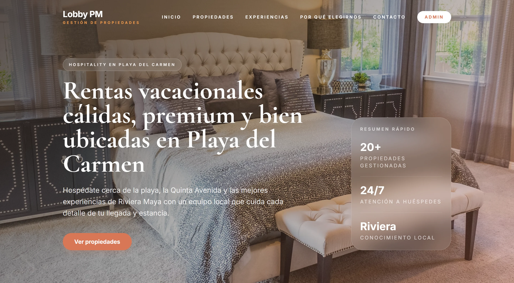
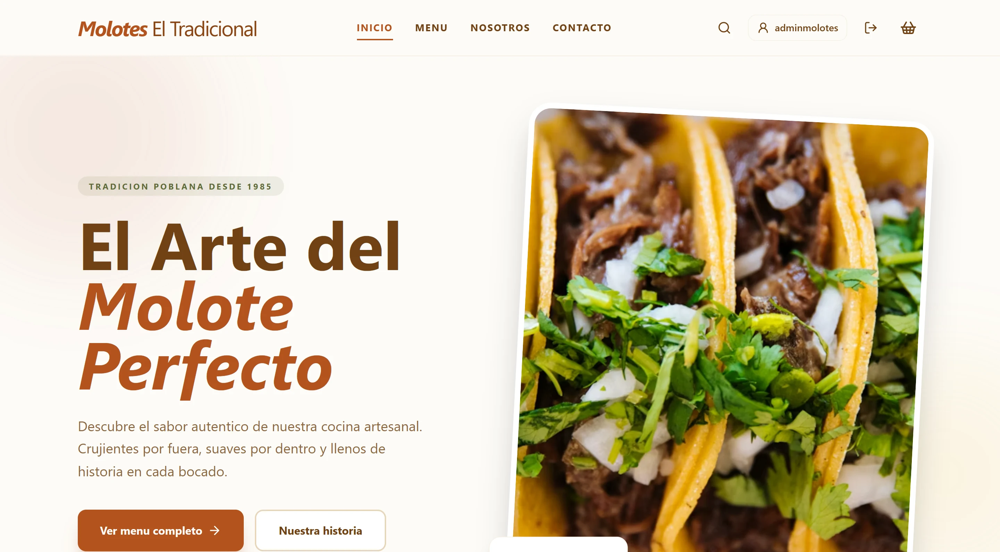

DISEÑO Y DESARROLLO WEBPARA NEGOCIOS QUE AÚN NO TIENEN SITIO
La primera web
de tu negocio.
TU NEGOCIO ES EL PUNTO DE PARTIDA
Presenta lo que haces con un sitio diseñado para ti y una forma clara de contactarte.
Pedir mi cotización ↗

OTRA DIRECCIÓN.
DISEÑO PROPIO / CONTENIDO CLARO / CONTACTO DIRECTODESLIZA PARA EXPLORAR ↓

02 / QUÉ RESOLVEMOSTu contenido.
Tu contenido.
Bien presentado.
Antes de pensar en efectos, definimos lo que tu cliente debe entender y cómo puede pedirte información.
CONTENIDO Y ESTRUCTURA
Organizamos tus servicios y la información necesaria para que tu cliente sepa qué puedes hacer por él.
ANTES DE EMPEZARUna web propia.
mi sitio↗
Una web propia.
Todo claro.
Recibe una propuesta que puedas revisar antes de decidir.
- Páginas y contenido
- Plataforma y funciones
- Costo y tiempos
mi sitio↗
03 / ASÍ AVANZAMOSCon tu participación.
Con tu participación.
De principio a fin.
- 01
Nos cuentas.
Qué hace tu negocio, para quién y qué necesita su primera web.
- 02
Lo ves.
Revisas una dirección visual y el alcance antes de desarrollar.
- 03
Lo revisamos.
Comprobamos lectura, navegación y contacto en escritorio y móvil.
AHORA, HABLEMOS DE TU NEGOCIO
CotizarCuéntanos qué haces.
Definimos lo que necesita tu web.
mi proyecto.↗ALCANCE, COSTO Y TIEMPOS ANTES DE EMPEZAR.